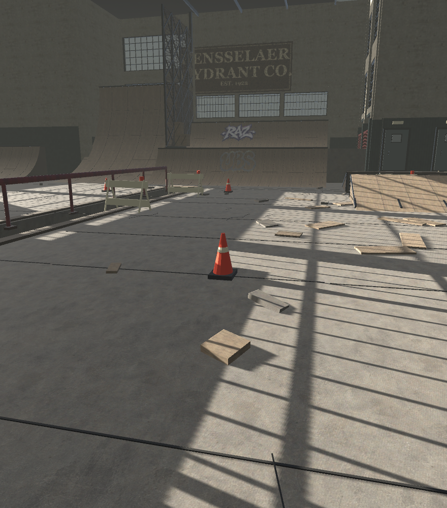
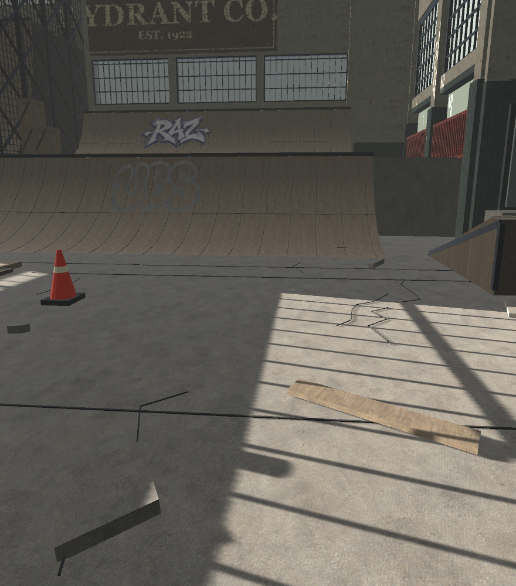
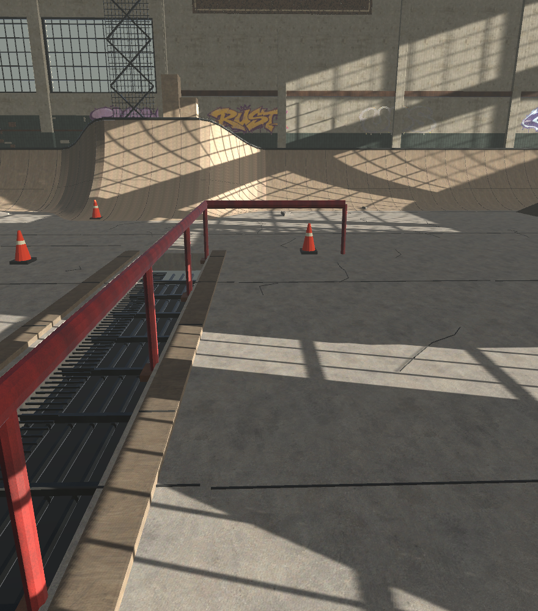
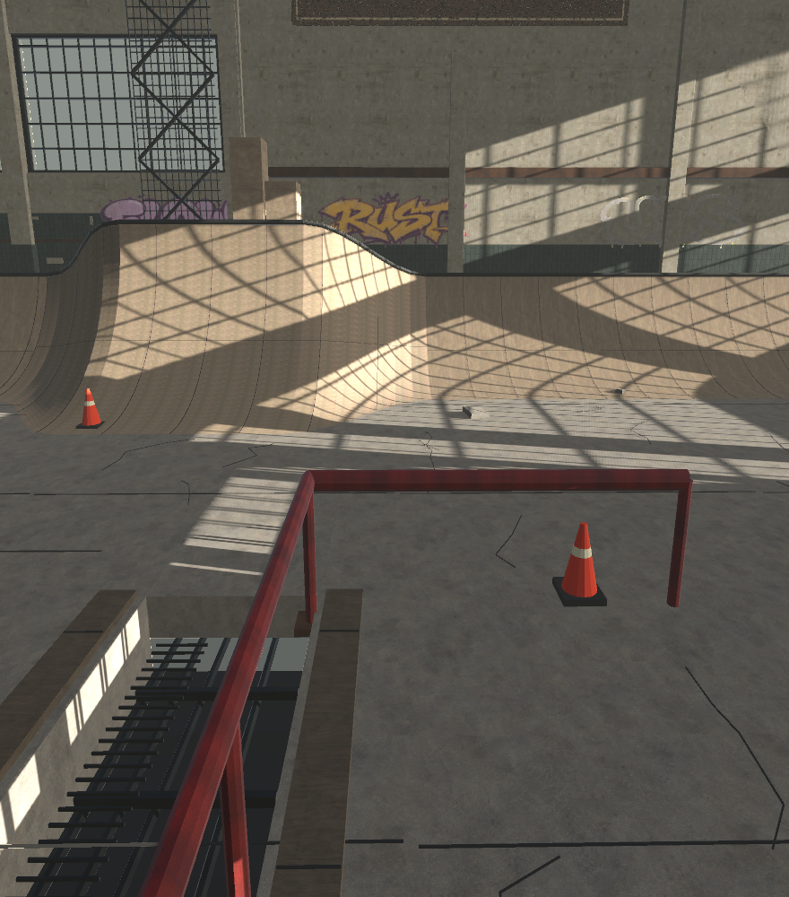
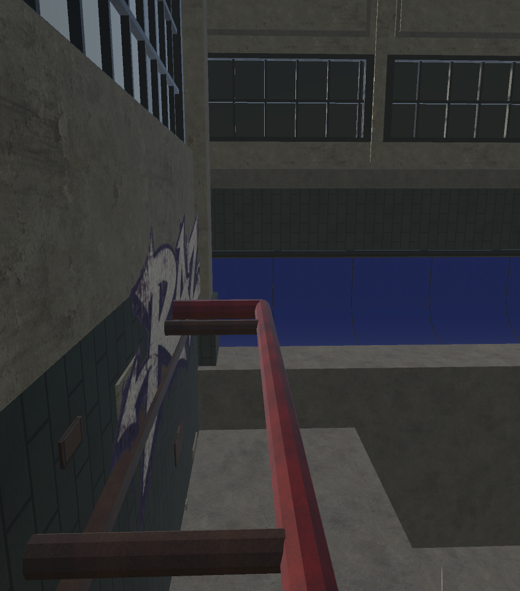
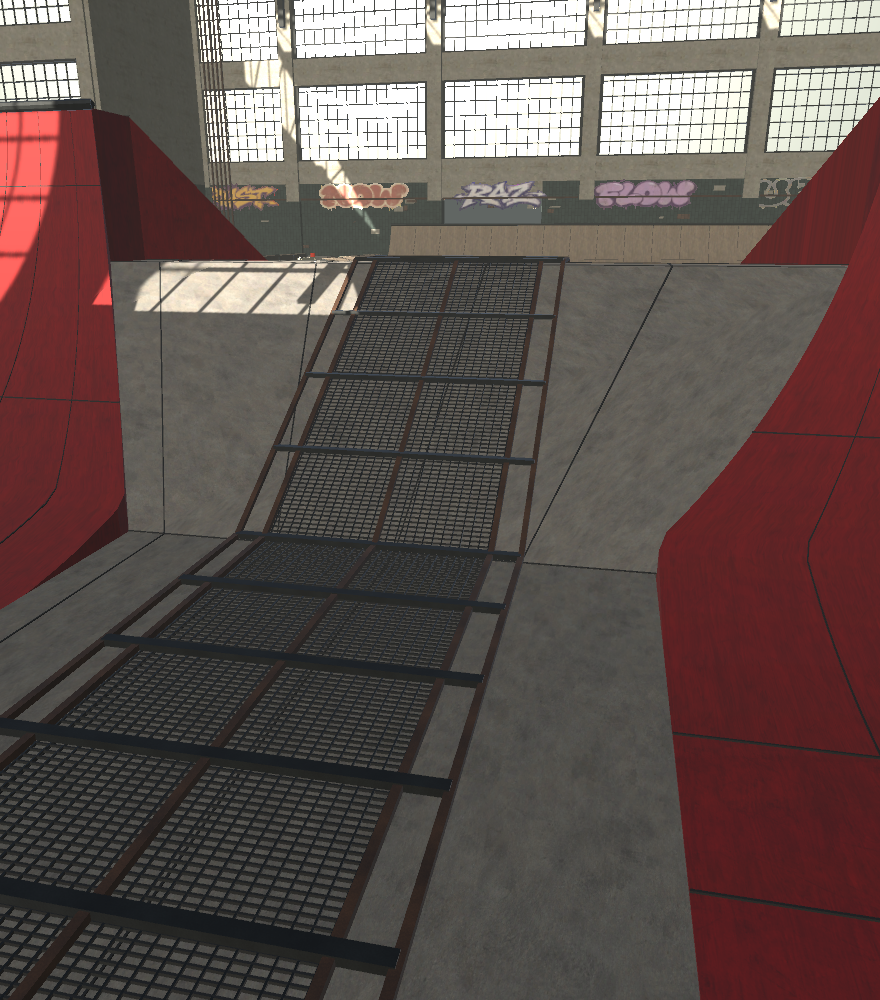
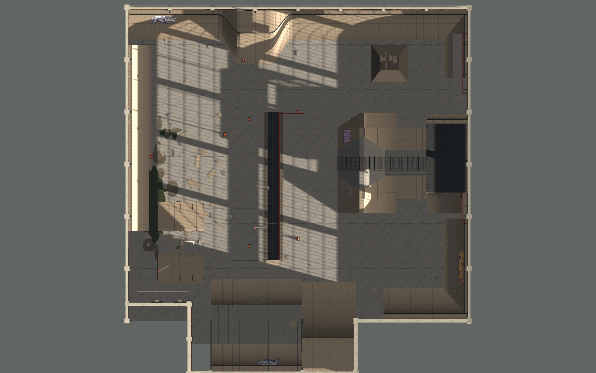

WAREHOUSE / CAMERA CONTINUITY REVIEW / V8
跟随橙衣玩家，重新确认办公室前的转角
连续查看 1:42–1:47 的转向后，确认 1:46 已沿东墙朝南，前方横窗是办公室北面。V7“沿北墙朝东”的判断撤回，新增北墙红管已移除。补建办公室北侧上层短弧坡、灰色底座和墙边平台，调整红管终点与窗带。用户已撤回“左右各有另一平台”的猜测，本轮没有据此拆平台或整体加宽大厅。路线方向已核清；尺寸、机位距离和光照仍为估计，尚未达到 1:1。
连续路线 · 1:44 → 1:45 → 1:46
| 视频时间 | 连续画面中的地标 | 空间关系 |
|---|---|---|
| 1:44 | KDR 位于左侧墙，GERN 在前方转角墙。 | 沿北侧向东侧移动。 |
| 1:45 | GERN 转到左侧，双横窗和下方墙面出现在前方。 | 已经完成转角，开始沿东墙朝南。 |
| 1:46–1:47 | 红管在弧坡前结束；玩家跃向蓝色弧坡，横窗始终在坡上方。 | 办公室北面下方的短弧坡位于灰色底座上，墙边另有低平台；不能用接到大厅地面的单一大弧坡代替。 |
以上是本轮逐步播放与暂停观察所得，方向的把握高于尺寸。没有把视频剪辑前后当作连续路线，也没有声称完成整段视频的自动摄影测量。
1:32 · 橙衣玩家起点
保留起点机位再渲染。右侧门台为凸出建筑，侧面有窗、柱和橙色栏栅，前方有双门与台阶。门台侧面露出的宽度、墙面旧化和窗影仍与原图不同；本轮没有为了这一张图单独变形大厅。


1:35 · 接近南端凹口
UBS 前坡、坡后平面和更后的 RAG 坡仍为三个表面。门台在右侧，双跳台在近侧；重拍未发现本轮办公室改动影响这组相对位置。接近距离、坡宽投影与照片仍有偏差。


1:39 · 红扶手与北端高台
保持原机位。北端局部高坡向大厅凸出，接回两侧低坡：中央坡脚 Z=13.4，台沿约 Z=17.58，后边界 Z=21，顶高 3.8 m。箱子在前移后的台沿附近。这是相连的高低坡面，没有按用户已撤回的猜测增建两块独立平台。


约 1:40 · 北端凸形轮廓
左图是用户裁图，右图为估计机位的完整渲染，没有拉伸图片强行重合。平面凸出由真实网格形成；坡肩曲线、箱子与铁笼的投影、前景扶手交点仍不完全一致。


1:46 · 东墙红管 → 办公室北面
当前机位位于 (22.2, 4.7, 13)，朝向 (12°, 182°, 0°)，垂直 FOV 64°。红管在 Z=9.5 结束；短弧坡从 Z=6.6、标高 2.6 m 向南抬升至 3.8 m，下方灰色底座延伸到 Z=7.5。沿东墙的平台高 1.8 m。并排大图发现原先大弧坡遮住灰色平台后，再次回看 1:45–1:47，改为这组分层结构。新增双横窗、窗上实心板与窗下墙带，玻璃改为不透的积尘材质。蓝色只在此张参考状态中临时使用，保存场景仍为木色。前景人物缺失，墙面涂鸦、管线细节和明暗仍有差异。


1:46 木色基础场景 · 打开并排大图 · V7 旧候选机位（已否定，不能作为同机位前后比较）


1:52 · 金属通道两侧曲坡
重新渲染原通道机位。底部灰带约 3.54 m，出口约 7 m，格栅约 1.90 m；两侧木坡高约 3.11 m，金属顶约 1.72 m。保留 V7 的细密格栅。两侧木坡确实存在；红色为视频占领状态的临时对照色。坡面轮廓、窗墙距离与背景门洞仍未完全匹配。


办公室与新增弧坡
办公室保持上一轮扩大、降低后的主体：X=17.3…22.96，Z=−3.7…5.3，楼板底 4.8 m，顶 5.1 m。北面两扇横窗底 5.5 m、高 1.25 m；上方实心板到约 8.05 m。北侧上层短弧坡宽 5.66 m，由标高 2.6 m 抬升至 3.8 m；坡脚 Z=6.6、台沿 Z=6.0、顶台到 Z=5.3。小圆弧半径暂估 0.6 m，上方接直立面。灰色底座顶为 2.6 m；墙边平台宽 2.16 m、高 1.8 m，向西以斜面回接大厅。移除挡住北面窗口的大斜撑，保留短支柱。这些数值是当前模型参数，不是从原作测得的绝对尺寸。


俯视与保存检查

上为北，下为南。大厅保持约 45.92×42 m；南端凹口另向后延伸。没有足够依据继续全局缩放。北端局部凸台、东侧半管与办公室、中央沟槽和西侧跳台仍使用同一份场景。
| 检查 | 结果 |
|---|---|
| 相机保存 | 修复复制相机设置后覆盖机位的问题。11 个检查相机已保存各自坐标；主相机仍为橙衣玩家 1:32 起点。 |
| 新增结构 | 办公室北坡朝向、75 处曲坡法线/碰撞采样、3 个上层平台点、3 个灰色底座／墙边平台点、东墙红管终点与北墙误建管道移除均通过。 |
| 既有结构 | 243 个金属通道支撑点、5 个展开口点、北端凸面及平顶、门台三级台阶、办公室楼板支撑均通过。 |
| 保存与依赖 | 重新打开已保存场景通过；84 个网格、118982 个三角形、47 个静态碰撞体；资产自包含。红、蓝临时对照材质均已恢复。 |
| 仍未一致 | 门台侧面露出宽度、北坡肩部、部分背景距离、墙面纹理、管线细节和光照。几何检查不能证明画面相似度。 |
固定机位叠图 · 起点 / 北端 / 通道
切换位置，再调整视频截图的透明度观察偏差。这里将原始双屏截图的左半屏与 Unity 渲染叠加；不是自动配准或准确率评分。
完整检查结果 · 保存的相机坐标 · 逐帧观察记录 · V7 旧报告（含已撤回判断） · 原视频 1:30 起
场景 Assets/Max/WarehouseRecreation.unity；原 MaxScene.unity 未替换。V7 完整备份在 Source~/BeforeCameraContinuityAudit~。未测试滑板/Leap Motion 操控、跨设施接缝的高速滑行或动态 Graffiti；光照与原作美术仍有差距。